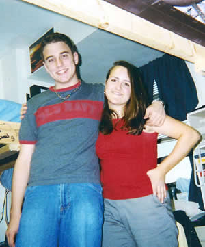
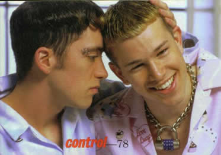
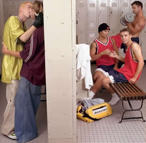

Near the end of my high school experience I had come to a powerful realization: my life was not going to be like the rest of the world's. I came to the sudden conclusion, based on all the feelings I had since I was very young, that I was gay. It was a sweeping experience in which every expectation I had for my future transformed before me. I could not have the traditional family or the traditional marriage. It would all be different for me. One of the most significant journeys I set out on during my four years at college was coming out.

When I arrived at UGA, I made a promise to myself. I wasn't going to make friends while I was still closeted. I wanted everyone that I met to know that I was gay so that if anyone had a problem with it they would have to deal with it sooner rather than later. Before I came to college, I had only the smallest amount of experience getting to know myself and my sexuality. When I was in high school, I would buy XY Magazines from Barnes and Noble and read all about life as a young gay man. I envied those who were brave enough to come out of the closet. I wanted to be in a place where I could comfortably be the person I was born to be. Before the end of my Junior year in high school, I met a boy I talked to online who knew I was gay. It was a scary experience, and though we did not remain friends, he helped me gain the courage to come out to my friends in high school. Soon after that, I was able to realize I could handle coming out of the closet completely when I arrived at UGA.

While at UGA, I have learned so much about myself and my sexuality. I went from boy-crazy freshman to level-headed senior in a matter of four years. I joined the gay student union, Lambda Alliance, early on and made a great many dear friends. I volunteered as assistant Administrative Director of Lamda during my Sophomore Year and contined into my Junior Year as the Administrative Director. I was able to help establish the University's first GLBT Resource Office. With this space, future classes at UGA will not have to wonder where they can go to find a safe haven for gay and lesbian students. Because of my hard work and the hard work of countless others, the next generation of GLBT students will have a place to call their own.
I have had a scant few relationships while I've been in school. Some were pretty amazing and opened my eyes while others were heart-wrenching and painful. It's been a very rough ride, but now that it's over, I'm glad I took the chance. Many people would not be able to handle the pressures of coming out to themselves and others, but I did. At the end of four years, I am still standing proud.
I have had a scant few relationships while I've been in school. Some were pretty amazing and opened my eyes while others were heart-wrenching and painful. It's been a very rough ride, but now that it's over, I'm glad I took the chance. Many people would not be able to handle the pressures of coming out to themselves and others, but I did. At the end of four years, I am still standing proud.